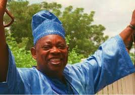

Dr. Moshood Abiola

His Religious traditions
Following common tradition, Abiola took four wives; Simibiat Atinuke Shoaga in 1960, Kudirat Olayinki Adeyemi in 1973, Adebisi Olawunmi Oshin in 1974, and Doyinsola (Doyin) Abiola Aboaba in 1981. He is said to have fathered over 40 children from these four marriages. Abiola's second wife, Kudirat, was murdered in the capital city of Lagos in 1996. There was speculation that her death was caused by the military, but no proof was ever found. His third wife, Doyin, ran a newspaper chain he owned until it was closed by the government. In 1992, Abiola was ordered to pay $20,000 a month in child support to a woman who claimed to be his wife. His lawyers argued in a New Jersey court that Abiola had only four wives; this woman was just one of his 19 concubines.
A Businessman and Entrepreneur
Abiola was considered to be a genial businessman who amassed a fortune through his association with various enterprises, including publishing, communications, and oil. With his educational background in accounting, he easily assumed the position of deputy chief accountant at Lagos University Teaching Hospital from 1965 to 1967, and comptroller of Pfizer Products, Ltd. between 1967 and 1969. In 1969, he became the comptroller of International Telephone and Telegraph (ITT), Nigeria, Ltd., and rapidly rose to become vice president for ITT's Africa and Middle East branch. He was also chairman and chief executive officer of ITT Nigeria, Ltd. from 1972 through 1988. During this period Abiola founded and sat as chairman of Concord Press of Nigeria Ltd. and served as chief executive at Radio Communications Nigeria. While employed with ITT, he was frequently admonished by the general public due to the dreadful condition of the Nigerian telephone system. Abiola's detractors claim he profited financially at the expense of the citizens by using inferior materials and keeping extra profits for himself; charges he adamantly denied.